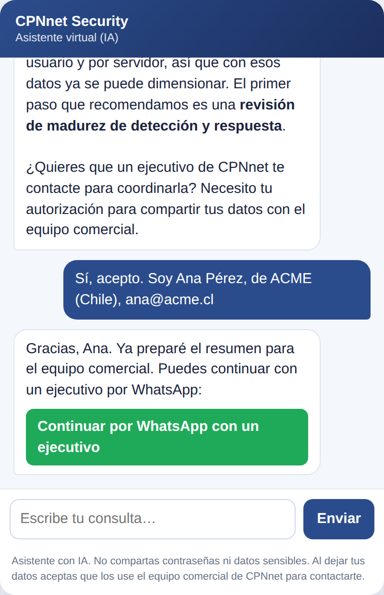
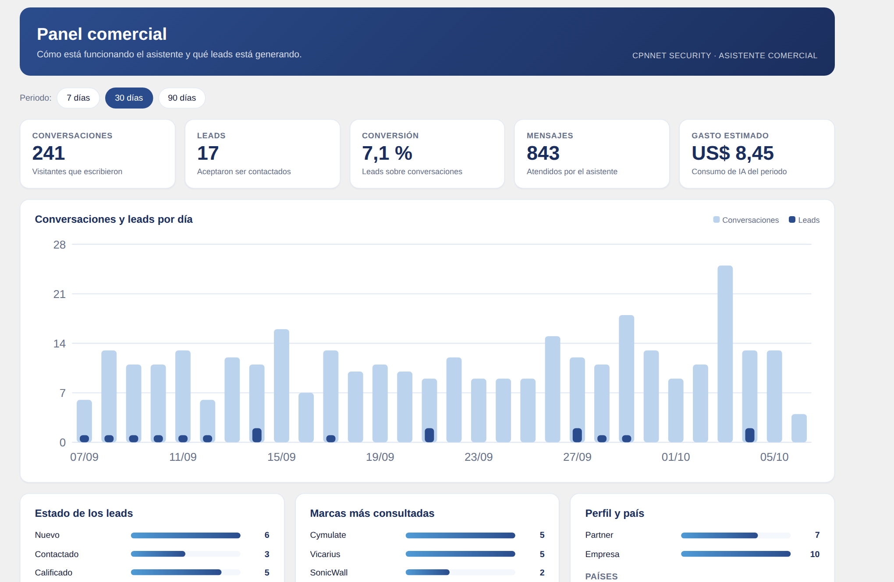

Un chat en su sitio web que orienta a partners y empresas sobre el portafolio, y entrega al equipo comercial leads listos para contactar.
Protección, Gestión de Riesgo y Operaciones de Seguridad, más soluciones especializadas de cross-selling.
Los partners buscan qué marca ofrecer y cómo dimensionar. Las empresas buscan resolver un problema, sin conocer las marcas.
Un visitante con una duda a cualquier hora puede recibir orientación al instante y dejar su contacto, sin esperar un correo de respuesta.
El catálogo ya define para cada marca qué problemas resuelve, cómo se dimensiona y cuál es el primer paso recomendado. El asistente convierte esa información en una conversación.
Pregunta si es partner/integrador o empresa y adapta el lenguaje: técnico-comercial para partners, de negocio para empresas.
Hace pocas preguntas y recomienda 1 a 3 marcas del portafolio, con los complementos del mapa de cross-selling.
Usa la "entrada recomendada" de cada ficha: assessment, piloto, POV o workshop.
Con consentimiento del visitante, envía un resumen del lead por WhatsApp a un ejecutivo.
¿Partner o empresa?
Una o dos preguntas por turno, nunca un formulario largo.
Marcas que calzan y por qué, según el catálogo.
Assessment, piloto, POV o workshop según la marca.
Resumen por WhatsApp a un ejecutivo, con consentimiento.
Si el visitante pregunta algo que el catálogo no cubre (por ejemplo precios), el asistente lo dice y ofrece una cotización con un ejecutivo.

La empresa cuenta que tiene un equipo de seguridad pequeño, muchas alertas y nadie de guardia fuera de horario.
Conversación de ejemplo con datos ficticios.
El ejecutivo llega a la conversación sabiendo:
Los leads llegan por WhatsApp y además quedan guardados en un repositorio dentro del WordPress de CPNnet, visibles para el área comercial.

Datos de ejemplo.
Un botón en el panel descarga los leads con los filtros aplicados. Se abre directo en Excel y la mayoría de los CRM lo importan.
El CRM, o un proceso programado, consulta los leads nuevos y marca los que ya importó. Acceso solo de lectura, protegido con token.
Cada lead nuevo se avisa al CRM al instante, con firma de seguridad. Si falla, se puede reenviar desde la ficha.
El plugin nunca escribe en la base de datos del CRM: es el CRM quien toma los datos. Se puede empezar con CSV y pasar a API o webhook cuando el equipo técnico lo decida.
Responde con la información del catálogo de CPNnet. No inventa precios, plazos ni condiciones; cuando no sabe, deriva a una persona.
Solo comparte datos de contacto con el equipo comercial si el visitante lo autoriza, y se identifica como asistente virtual.
La clave de la IA vive en el servidor del sitio; el navegador nunca la ve.
Límite de mensajes por visitante y por día, tope mensual de gasto en el plugin y límite en la cuenta de la API.
El plugin no modifica la base de datos del CRM: es el CRM quien toma los leads, por API, webhook o CSV.
Se instala como un plugin en el cPanel actual. No requiere servidores adicionales.
Activar o apagar el chat, WhatsApp que recibe los leads, mensaje de bienvenida, modelo de IA y límites de uso.
Agregar, editar o eliminar marcas con un formulario: resumen, problemas que resuelve, diferenciales, cómo se dimensiona y primer paso recomendado.
Tono del asistente, cómo detecta partner o empresa y cuándo deriva a un ejecutivo, escritos en español común.
Mensajes atendidos, tokens consumidos y gasto estimado del mes y por día, con el tope mensual configurado.
Los cambios se aplican al instante desde el panel de WordPress, sin volver a instalar nada. Hay un botón para restaurar el contenido original si algo no queda bien.
| Modelo de IA | Por mensaje | Por conversación |
|---|---|---|
| Más capaz (Opus 5.5) | ≈ US$ 0,015 | ≈ US$ 0,14 |
| Intermedio (Sonnet 5.5) | ≈ US$ 0,009 | ≈ US$ 0,08 |
| Económico (Haiku 4.5) | ≈ US$ 0,004 | ≈ US$ 0,04 |
Estimaciones con precios de lista, conversación de 6 mensajes y respuestas de ~400 tokens. El costo real se mide en el panel «Uso y costos»; la factura final es la de la consola de la IA.
Plugin en el sitio con la cuenta de CPNnet, catálogo cargado, leads por WhatsApp, panel comercial y panel de edición. Pruebas con el equipo comercial.
Conexión activa con el CRM de CPNnet (API o webhook con mapeo de campos), agenda de reuniones y derivación según país o marca.
Revisión de conversaciones, preguntas sin respuesta y medición de conversión de chat a lead.